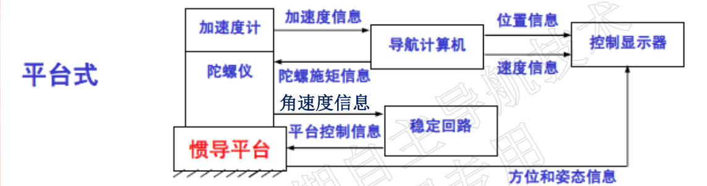
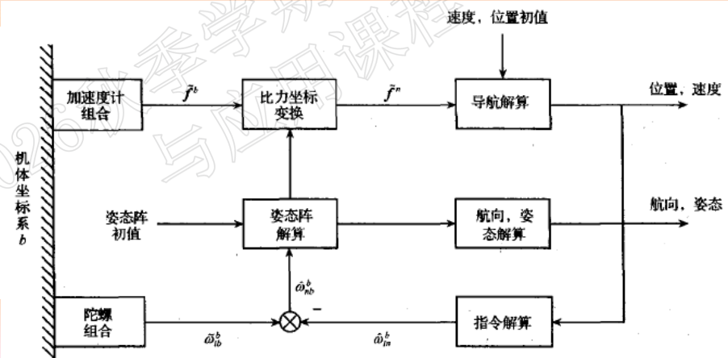
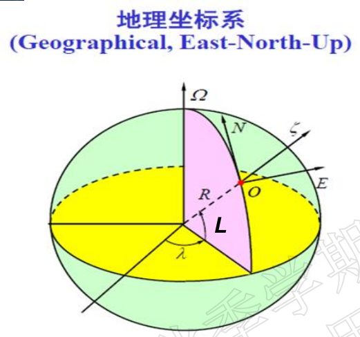
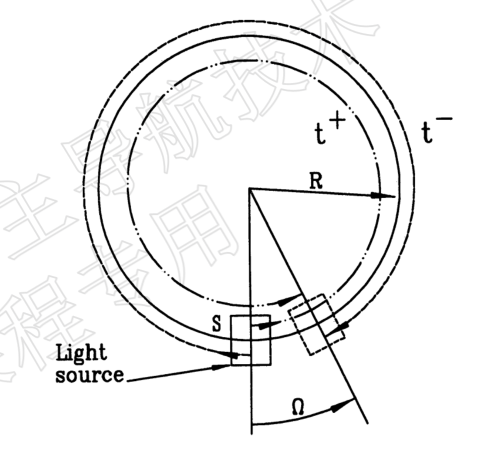
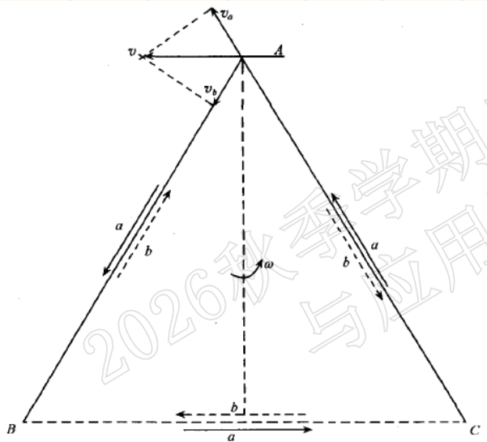
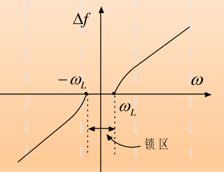
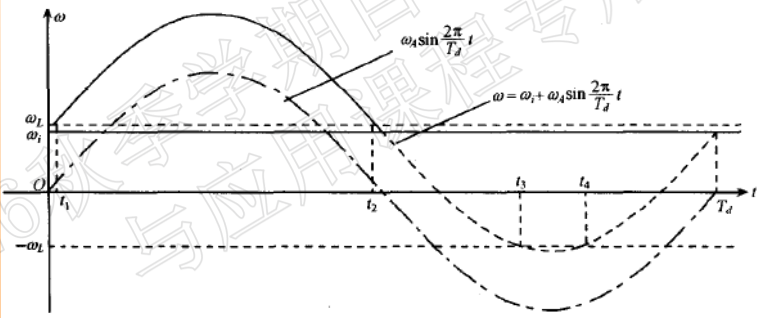
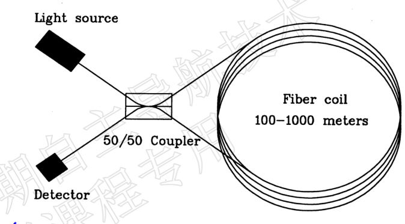
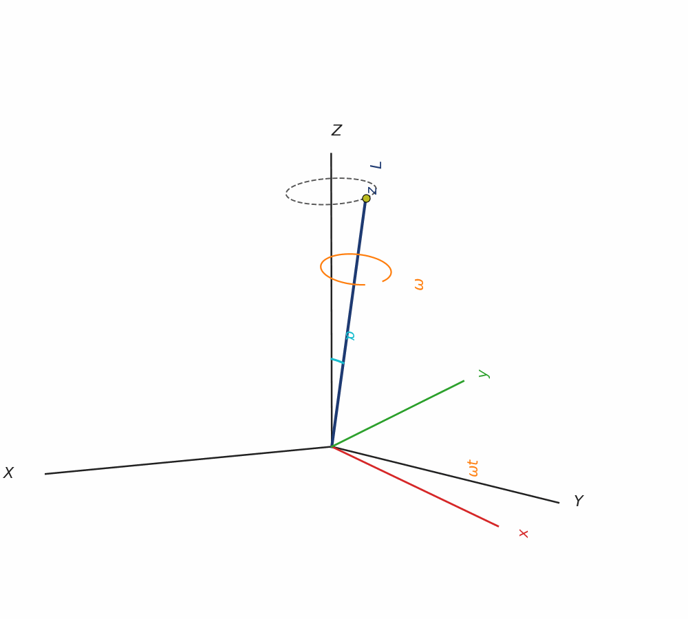
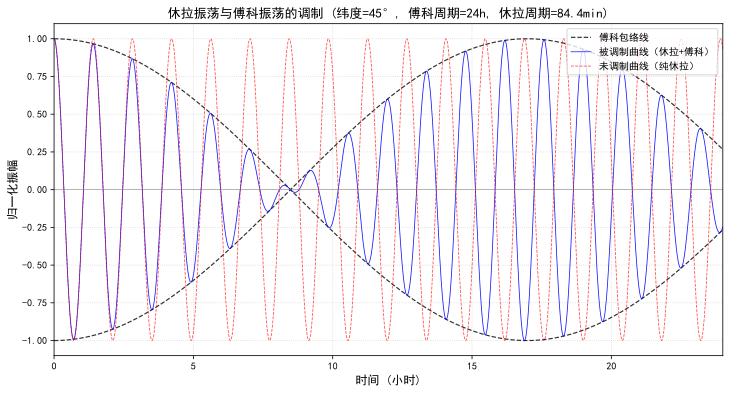

自主导航技术与应用
自主导航技术与应用
历史、发展和基础概念
什么是导航
导航是指在某参考系内将运动物体（载体）从起始点引导到目的地的技术或方法。通过几何学、天文学、无线电信号等任何手段确定或规划船舶、飞机的位置及航线的方法。
包含两方面内容：1，确定运动物体相对已知参考系统的位置、速度和姿态，称为导航科学；2，由一个地方到另一个地方航线的规划与保持，回避障碍并避免碰撞，称为导航方法，也可称为制导、领航或航线规划。1 是我们的主要任务。
导航技术
导航技术：确定位置和速度的方法，可以是人参与的，也可以是自动实现的。
导航系统
导航系统：也称辅助导航设备，是自动确定位置和速度的装置。
狭义导航系统：提供位置、速度信息。
广义导航系统：提供位置、速度、姿态信息。
导航的任务
确定运动物体（载体）的速度、位置和姿态。
定位和导航的联系
定位：确定载体的空间位置，但不包括速度和姿态。许多导航技术，严格地讲是定位技术。但由于定位结果更新率高，可以根据位置变化率推导出速度。
常用的导航方法
航标导航、视觉导航、仿生导航、惯性导航、天文导航、地标导航（匹配导航/地形或景象匹配）、重力、地磁导航、无线电导航（卫星定位导航）。
单独一种导航方式往往无法完成导航要求，因此提出了组合导航，其已成为目前主要趋势。
导航的分类
按数据获得手段
观测（舰位）法
依靠观测外部目标或接收外部（光波、无线电波）信息来确定载体的导航参数。典型如航标导航、天文导航、地标导航、无线电导航（卫星定位）。
推算（舰位）法
用舰船自身的导航设备，不断测量舰船的航向、航速或加速度，加入初始位置、速度和姿态，推算出舰船的瞬时位置、速度和姿态。典型是惯性导航。
按外部信息依赖
自主导航：不依赖地面支持，载体完全依靠自身携带的测量设备实时地完成导航任务，和外界不发生任何光、电联系。具有隐蔽性好、工作不受外界条件（自然、非自然）影响的优点。美国学者 Lemay 提出用下列四个特点来代表：①自给或独立，②实时，③无发射，④不依靠地面站。一些典型的自主导航：
惯性导航：利用惯性测量元件（陀螺、加速度计）测量载体相对于惯性空间的角运动参数和线运动参数，在给定运动的初始条件下，经导航解算得到载体速度、位置和姿态的一种导航方法。主要由加速度计、陀螺仪和导航计算机构成。分为平台式和捷联式。


优点有：
- 不依赖于任何外部信息，也不向外部辐射能量的自主式系统，故隐蔽性好，也不受外界电磁干扰的影响。
- 可全天候、全球、全时间地工作于空中、地球表面乃至水下。
- 能提供位置、速度、航向和姿态角数据，所产生的导航信息连续性好而且噪声低。
- 数据更新率高、短期精度和稳定性好。
缺点有：
- 由于导航信息经过积分而产生，定位误差随时间而增大，长期精度差；
- 使用之前需要较长的初始对准时间；
- 高精度的设备的价格较昂贵；
- 不能给出时间信息。
常常通过组合导航的方式改善这些缺点。
天文导航：以已知准确空间位置的自然天体为基准，通过天体测量仪器（星跟踪器等光学传感器）被动探测天体位置，经解算确定测量点所在载体的导航信息。
优点有：
- 自主性强。不受人工或自然形成的电磁场的干扰，不向外辐射电磁波，隐蔽性好；
- 定位、定向的精度比较高，定位误差与定位时刻无关，即导航误差不随时间积累。
缺点有：
- 天文测量受到天体能见度的限制；
- 导航信息更新率较低，即计算时间较长。
卫星导航：是指采用导航卫星对地面、海洋、空中和空间用户进行导航定位的技术。通过对已知信标测量来确定运动体位置、速度和姿态信息的技术。测量运动体到四个或更多已知点的伪距、伪距变化率、距离差（后两者利用多普勒效应）来确定运动体的位置和速度，通过载波相位测量来确定运动体的姿态信息。
非自主导航。
按照运动体运动范围
主要有以下四方面的导航：海、陆、空、天。
按照应用领域
可分为军用和民用两个方面。
对导航系统的要求
- 精度：系统为运载体所提供的位置与载体当时的真实位置之间的重合度。
- 可用性：为运载体提供可用的导航服务的时间的百分比。
- 可靠性：系统在给定的使用条件下，在规定的时间内以规定的性能完成其功能的概率。
- 覆盖范围：一个面积或立体空间，在此区域内，导航信号足以使导航设备或操纵人员以规定的精度定出载体的位置。
- 导航信息更新率：导航系统在单位时间内提供定位或其他导航数据的次数。
- 导航信息多值性：有些导航系统为载体给出的位置信息可能有多种解释或位置指示发生了重复，必须具有多值性手段。
- 系统容量：导航系统提供导航服务的用户数量的多少。
- 系统完善性：当导航系统发生任何故障或误差变得超出了允许的范围时，系统发出及时报警的能力。
- 导航信息的维数：导航系统为用户所提供的是一维、二维还是三维的运动状态信息。
数学基础
旋转矩阵
记忆方式：对角为余弦，旋转轴为 1，1 下正弦正。
$C_A^B$ 表示从坐标系 $A$ 到 $B$ 的变换，有关系：
旋转角度的方向：绕坐标轴正方向逆时针旋转为正。
小角度旋转
以 $R_z$ 为例，$\lim_{\theta\rightarrow0}R_z(\theta)=\begin{bmatrix} 1 & \theta & 0 \\ -\theta & 1 & 0 \\ 0 & 0 & 1 \end{bmatrix}=I-\delta_z(\theta)$。
此处刻意使用负号而非正号，是为了凑出反对称的形式。
归纳整理有：
这里 $\theta$ 是标量。这样一来，设坐标系 $P$ 按顺序偏离坐标系 $T$ 小角度 $\vec\phi=[\phi_x,\phi_y,\phi_z]^{T}$，则：
类似地，$C_P^T=I+[\vec\phi\times]$。
其中符号 $[\cdot\times]$ 表示向量的反对称阵：
务必记住，以后会经常用到。
哥氏定理
描述绝对变化率与相对变化率之间的关系。假设有矢量 $\vec r$，两个互相旋转的坐标系 $m,n$，则：
其中，$ \left. \frac{\mathrm{d}\vec{r}}{\mathrm{d}t} \right|_m,\left. \frac{\mathrm{d}\vec{r}}{\mathrm{d}t} \right|_n $ 分别是在 $m,n$ 坐标系内观察到的 $\vec r$ 的时间变化率，$\vec{\omega}_{mn}$ 是 $n$ 相对 $m$ 的旋转角速度。
常用坐标系
地心惯性坐标系
原点在地心，$x$ 轴正方向由地心指向春分点，$z$ 轴正方向为自转方向，$y$ 轴正方向为 $\vec{z}\times\vec{x}$，即右手法则。
地球坐标系
原点在地心，$x$ 轴正方向由地心指向子午面与赤道交点，即经度 $\lambda=0$ 处。$y$ 轴正方向为 $\vec{z}\times\vec{x}$，即右手法则。
$\omega_{ie}$ 是地球自转角速度。这个矩阵的计时起点和选择的方案有关。
地理坐标系
一般是东北天坐标系。参考下图：

通过上图的分析能够发现：
机体坐标系
有东北天（ENU）、北东地等机体系，接下来研究的都是 ENU。
采用 $z-x-y$ 转序，旋转角按顺序记 $\psi-\theta-\gamma$，很自然的有：
如果读者见到 $\sin \psi$ 相关的部分符号完全相反，这表明使用的 $\psi$ 定义不一致。推导者可能使用了北偏东为正的偏航角定义，由于在北东地坐标系中，使用北偏东也有一定合理性，部分工程实践中会将 ENU 和 NED 坐标系的偏航角都定义为北偏东为正。
我们此处不这样做，理由是在 ENU 中，北偏东不是坐标系逆时针旋转方向。
惯性导航预备知识
惯性器件
也称惯性仪表，即陀螺仪和加速度计。陀螺仪用来测量载体的角速度，或在控制角运动的伺服回路中用作控制环节；加速度计用来测量载体的加速度。
“惯性”的意义
- 陀螺仪和加速度计服从牛顿力学，基本工作原理是动量矩定理和牛顿第二定理，即基本惯性原理。
- 惯性元件的输出量都是相对惯性空间的测量值，即陀螺仪的输出是相对惯性空间的角速度，加速度计的输出是相对惯性空间的加速度。
机械陀螺仪
机械转子陀螺仪中，一个绕对称轴高速旋转的飞轮转子叫陀螺。将陀螺安装在框架装置上，使陀螺的自转轴有角转动的自由度，这种装置的总体叫做陀螺仪。基本上由这些部分构成：
- 陀螺转子（常采用同步电机、磁滞电机、三相交流电机等拖动方法来使陀螺转子绕自转轴高速旋转，并且其转速近似为常值）；
- 内、外框架（或称内、外环，它是使陀螺自转轴获得所需角转动自由度的结构）；
- 附件（是指力矩马达、信号传感器等）。力矩马达（力矩器）用于控制转子绕框架轴转动，信号器用于拾取陀螺输出角。
根据框架的数目、支承的形式、附件的性质等决定陀螺仪的类型。
按框架数目
单自由度陀螺；双自由度陀螺。机械转子陀螺仪的特性（单自由度和双自由度）。
主要是进动行为不同，对双自由度陀螺而言：
这表明陀螺进动是无惯性的行为，即一施加外力矩，立刻出现相应的进动行为，进动角速度轴垂直于角动量和力矩平面，方向由右手定则确定。
这里用到了一个非常有用的公式，请牢记：
对单自由度陀螺而言，它首先经历上面推导相同的行为，然后因为进动方向不自由，产生了与进动角速度方向相反的外力矩，这个外力矩产生的进动角速度将与原力矩导致的一致，即等效于未发生进动。
按支承类型
液浮陀螺仪；气浮陀螺仪；磁悬浮陀螺仪。
光学陀螺仪
光学陀螺仪是以 Sagnac 效应为基础研制出的新型陀螺仪，它包括激光陀螺仪和光纤陀螺仪。光学陀螺仪的理论基础：量子力学。优点是全固态、启动快、耐冲击、动态测量范围宽、数字输出、工作可靠、受温度影响小、受加速度影响小。特别适用于构建捷联惯导系统。
萨格奈克效应 Sagnac
在任意几何形状的闭合光路中，从某一观察点出发的一对光波沿相反方向运行一周后又回到该观察点时，这对光波的相位（或它们经历的光程）将由于该闭合环形光路相对于惯性空间的旋转而不同，相位差（或光程差）与闭合光路的转动角速率成正比。

Sagnac 效应从理论上给出了角速度和光程差的关系式。
一个早期且粗糙的实现是迈克尔逊矩形干涉仪，面积为 600m×300m。
当光程差发生改变时可以通过光学干涉仪观察到干涉条纹图样，当整个系统旋转时，条纹图样发生横向移动，由此可以计算旋转角速度。
尝试做一个简化的估计：$\Delta L\approx \frac{4\times600\times300}{3\times10^8}\frac{2\pi}{24\times60\times60}\approx 1.7\times 10^{-7}\text{m}$。注意这里光速和一天的时间取得均不精确，为了简单，使用了平太阳日。关于为何矩形闭合光路适用圆形光路的结果，可以使用微元法来理解和推导，这是旋转导致的。
激光陀螺仪
把激光增益介质引入环形谐振腔中，构成环形激光器，极大地提高了闭合光路测量角速度的灵敏度。
采用激光作为光源。激光优良的相干性，使正反方向运行的两束光在陀螺腔内形成谐振，即光束沿腔体环路反复运行时一直能保持相干。改测量光程差（相位差）为测量两束光的频率差，提高了陀螺的测量灵敏度。
采用三个反射镜组成环形谐振腔，形成闭合光路。激光在谐振腔中形成谐振的条件：谐振腔的长度等于激光波长的整数倍，即 $L=q\lambda$，$L$ 为光程，$q$ 为任意正整数，$\lambda$ 为波长。

注意这是个等边三角形，转轴是三角形中心，因此求解是容易的，进行速度分解和光程分析，则：
这里引入面积的原因跟前面的迈克尔逊干涉仪是类似的。我们实际上得到了角速度与频率差的关系，当然进一步地，还可以得到角增量的行为：
其中 $K=\frac{4S}{L\lambda}$ 称为激光陀螺的标度因数。常用的 He-Ne 激光波长 $\lambda=6.328\times 10^{-7}\text{m}$，假定我们制造了一个谐振腔边长 $a=0.1\text{m}$ 的正三角形激光陀螺仪，则：$K=\frac{4\times\frac{\sqrt{3}}{4}{(\frac{a}{3})^2}}{\frac{a}{3}\times\lambda}\approx9.12374\times10^4 \text{Hz/rad}$。
增益大很多，因此可以测量很微小的角速度。
激光陀螺的闭锁效应
由于激光介质的色散、模式牵引和反射镜的背向散射等原因，当顺/逆时针两束相向行波的频率接近到一定程度时，两者间将产生相互耦合作用，频率变成完全一样，此即频率俘获或频率同步现象，频差消失致使陀螺的拍频输出为零。
本质是类似死区的非线性行为。

典型的锁区范围：数十度/小时～数千度/小时。
解决这个问题：
- 抖振偏频：机械式小振幅高频抖动交变偏频（工程最常用）。
- 四频差动：纵向塞曼效应、法拉第磁致旋光效应等物理偏频。
- 速率偏频：通过恒速运动使激光陀螺避开闭锁区。或通过往复式的速度运动。
- 磁镜偏频：横向磁光克尔效应：两束光同频率同相位，入射方向相反，若所加磁场方向平行于反射镜且垂直于入射面，磁场会使光束产生附加相移，两束光相移大小相等，符号相反。利用了横向磁光克尔效应，通过交变附加磁场改变两束光的相移和相位差，同抖振偏频原理一致。
下面只简单介绍一下抖振偏频。
抖振偏频
谐振腔通过抖动轮机构安装在陀螺基座上抖动轮与陀螺敏感轴重合（即垂直于谐振腔环路平面），由压电元件控制抖动轮施加周期性的角速率抖动偏频信号，抖动信号可以是正弦波形式的，也可以是矩形波或者三角波等对称波形，实际中采用最多且最容易实施的是正弦抖动信号。即施加
陀螺仪测量的惯性角速率变为：
这个过程当然有误差，我们先来分析无附加误差的情形，即对无闭锁的：

对如图闭锁的情况：
教材称“由于穿越闭锁区的时间非常短，所以误差 $\delta \theta$ 很小，可以接受”，实际上它的意思是，相比原来根本测量不到（注意观察原始角速度，在死区内），这个误差是可以接受的。这个理由还不全面，实际上，由于时间很短，这段时间可以认为原速率是常值，因此多出来的那部分波峰可以用来填波谷，这部分的误差还能更小，真实的 $\delta \theta$ 比教材的说法（即我们上文推导的 $\delta \theta$ ）更小。
光纤陀螺仪

光纤陀螺有不少优点：
- 采用光纤作为光路，距离长，灵敏度高。
- 功耗低。
- 用相位差检测角速度，不存在闭锁效应问题。
- 全固态，可靠性高，抗冲击强。
其他陀螺仪
微机械（MEMS）陀螺仪
MEMS 陀螺仪多属振动陀螺，它利用哥氏力，即旋转物体在有径向运动时所受到的切向力来测量物体的转速。优点是体积小、启动快、成本低、动态范围宽、环境适应能力强、可通过微机械加工技术大批量生产。
微光电（MOEMS）陀螺仪
使用 MEMS 技术且基于 Sagnac 效应的陀螺仪，相比光学陀螺体积小质量轻，相比 MEMS 陀螺仪，灵敏度高且无运动部件，无需真空封装还能抗电磁干扰。缺点是 Sagnac 效应决定了基于其原理的小尺寸陀螺仪精度和灵敏度不会很高。
原子陀螺仪
以原子干涉仪为核心的转动测量装置，它利用原子干涉的 Sagnac 效应进行转动角速度的测量。是基于原子波干涉的 Sagnac 效应，与激光陀螺原理类似。
加速度计
是测量运载体线加速度的仪表。加速度计是通过测量加速度产生的惯性力来测量加速度的。因此，加速度计实质上是测力计。加速度计测量的理论基础是牛顿定律。
$f$ 称为比力，表示作用在单位质量物体上的非引力外力。
地球模型
地球是一个不规则球体，其真实形状很难用数学模型表达，按接受的复杂度和精度选择合适的模型：
- 大地水准体：通过全球海平面（并延伸到大陆内部）的地球重力场等势面围成的空间体。几何形状不规则。最不规则，但精度最高。
- 圆球：球心位于地心，半径 6371km。是简化的理想模型，精度不高。后续会解释其精度不高的体现。
- 参考旋转椭球体：中心位于地心，分别以 $R_e$ 和 $R_p$ 为半长轴和半短轴的椭圆绕地球自转轴旋转 180 度所形成的椭球体，其中 $R_e$ 为赤道平面半径，$R_p$ 为极轴半径，通过大地测量确定。也可用长半径 $R_e$ 和扁率 $f$ 来描述。$f=(R_e-R_p)/R_e$。这是一个精度稍高的理想模型。
纬度的定义
根据不同的地球模型，纬度的描述也有差异：
- 地心纬度 $L_c$，所在点地心向径和地球赤道面的交角。
- 地理纬度 $L$（常简称为纬度），这是通过所在点的参考椭球体法线和地球赤道面的交角。
- 天文纬度 $L_g$，这是所在点的铅垂线（即大地水准体法线）和地球赤道面的交角。通常天文纬度被采用为地球纬度。天文观测只能给出天文纬度。
地理纬度和地心纬度的偏差可用如下公式表示：
地理垂线和地心垂线的最大偏差发生在纬度为 45° 的地方，约为 11′。
地理垂线和真垂线（天文垂线）的偏差很小，最大偏差角约为 3 角秒，因此地理纬度和天文纬度不加区别，统称为纬度。
海里的定义
同一子午圈上两点的纬度差为 1 角分，则两点间的距离为 1 海里（nautical mile，单位 nmile），将地球近似为圆球，则：
同一子午圈上地理纬度和地心纬度相同的两个点，实际位置的南北最大偏差为 11n mile，约为 20km。地理纬度和天文纬度实际位置的南北最大偏差为 92.5m。
参考旋转椭球体的曲率半径
经圈也叫子午圈，其半径记作 $R_M$，跟纬圈相切，子午圈正交的圈叫卯酉圈，半径记作 $R_N$，他们共同记作主曲率半径。
这里应用了幂函数的泰勒展开。$f$ 是扁率，与这里的一致。
与纬度有关的计算用 $R_M$，与经度有关的计算用 $R_N$。
重力与计时
万有引力提供了重力加速度和向心运动的加速度，因此：
真太阳日：太阳相邻两次照射同一个地点的时间间隔。
平太阳日：真太阳日的平均，严格的 24 小时。
恒星日：相对遥远恒星的时间，23 时 56 分 4 秒平太阳时。
显然，向心加速度和曲率半径都随着纬度变化，重力加速度将随着纬度变化。有达朗贝尔方程：
前者的参考重力加速度来自赤道，后者来自纬度 45° 的海面。这个公式推导属课外部分，教材也未提供，下面给出我的推导：
从矢量方程出发：
其中 $\vec{G}$ 为万有引力加速度，$\vec{\omega}_{ie}$ 为地球自转角速度，$\vec{r}$ 为地心到地表点的矢径。
利用矢量三重积公式（如果你看到这里了，请记得这个公式，你之后和之后的之后会用到的。）
令 $\vec{a}=\vec{b}=\vec{\omega}_{ie}$，$\vec{c}=\vec{r}$：
代入原式得：
取地表点 $P$ 的局部子午面，设地理纬度为 $L$，地心距为 $r$。将各矢量分解为沿矢径方向（径向 $\vec{e}_r$，向外为正）和垂直于矢径指向北极方向（纬向 $\vec{e}_L$，向北为正）：
这样就有径向的重力加速度：
纬向分量：
由于离心加速度远> 小于万有引力（$\omega_{ie}^2 r \ll GM/r^2$），取一阶近似：
利用 $\cos^2 L = 1 - \sin^2 L$：
将 $r$ 和 $1/r^2$ 代入上式，忽略二阶及以上小量（如 $f\omega_{ie}^2$ 项、$\sin^4 L$ 项）：
提取 $g_0$（赤道重力加速度）：
考虑 $g_L^2/(2g_r^2)$ 项，则：
由此得到完整的国际重力公式：
其中 $\beta \approx 5.9\times10^{-6}$ 为二阶小量。
代入以下地球物理常数：
- 地心引力常数：$GM = 3.986004418 \times 10^{14} \, \text{m}^3/\text{s}^2$
- 地球自转角速度：$\omega_{ie} = 7.292115 \times 10^{-5} \, \text{rad/s}$
- 赤道半径：$R_e = 6378137 \, \text{m}$
- 扁率：$f = 1/298.257223563 \approx 0.00335281$
- 赤道实际加速度：$g_0=9.78049\text{m/s}^2$
Schuler 调谐
运载体上确定出地垂线后即可确定出运载体的姿态。因此在导航系统中确定地垂线是一项重要的技术。在静止或匀速直线运动条件下，地垂线可用单摆等简单方法确定出来。当运载体具有加速度时，单摆不能正确指示地垂线，而且加速度越大，单摆偏离地垂线越严重。当单摆的无阻尼振荡周期为 84.4 分钟时，指示垂线的精度不受加速度的影响。
只要 $\frac{ml}{J} - \frac{1}{R}=0$，垂线偏差角与加速度无关，很容易解出这个二阶微分方程，并知道这个震荡频率实际上是 $\sqrt{\frac{g}{R}}$。
若用单摆来实现，则根据单摆的振荡周期 $2\pi\sqrt{\frac{l}{g}}$，摆长应该等于地球半径。
用物理摆来实现，要令 $l=\frac{J}{mR}$，故 $l$ 很小，要让 $l$ 大一些，应该考虑保持 $m$ 而尽可能增加 $J$，所以应该试着设计成环形。
惯导基本方程
也叫比力方程。本质上描述了相对惯性空间运动的坐标系的行为。
使用下标表示在哪个坐标系中求变化率，上标表示在哪个坐标系中表示。
例如，$\left.\frac{\mathrm{d}\vec{R}}{\mathrm{d}t} \right|_e$ 描述了对位置矢量 $\vec R$ 在地球坐标系中求时间变化率，也叫地速，简记作 $\vec V_{ep}$，即平台（platform）相对地球（earth）的速度，这样，由于地球相对惯性空间自转，根据哥氏定理有：
由于加速度计测量的实际上是加速度，因此上面的方程还需要再在惯性空间中求一次导，在惯性空间中求导的原因是，加速度计测量的结果是相对惯性空间而言的：
我们逐个来解决。对第一项应用哥氏定理，注意 $\vec{\omega}_{ip}=\vec{\omega}_{ie}+\vec{\omega}_{ep}$：
注意这里应用哥氏定理转换成平台坐标系的根本原因是，平台坐标系是导航用的坐标系。
对第二项应用求导的链式法则。注意 $\left. \frac{\mathrm{d}\vec{\omega}_{ie}}{\mathrm{d}t} \right|_i=0$：
代入后整理一下：
- $\dot{ \vec {V_{ep}}}$ 载体地速在平台坐标系中的变化率。
- $\vec f$ 比力，加速度计测量值。
- $(2\vec{\omega}_{ie} + \vec{\omega}_{ep}) \times \vec{V}_{ep}$ 相对地球运动和地球旋转引起的哥氏加速度、在地表进行圆周运动时产生的向心加速度。
比力方程说明：只有当加速度计的输出去掉了有害加速度之后，才能积分得到地速。
惯性高度通道
用向量格式重写比力方程，得到
整理高度通道：
如果忘了，可以再去看看这个重力高度变化公式。
纯惯性高度通道的框图形如
显然存在正的特征根，这是不稳定的。作为训练有素的控制工程师，应该考虑引入更多反馈回路或其他方式增加阻尼，改善稳定性。一般采用的是引入其他高度信息回路，例如：
写成矩阵形式
可以得到特征多项式：
考虑一个一般二阶模型：
这表明可以通过设计 $K_1,K_2$ 取得理想的性能。最终的输出形如：
新回路引入后，基本滤除高频误差分量，衰减低频误差分量，高度信息：稳定、精度较高。
如有必要，当然可以考虑引入速度反馈。
平台式惯导系统的力学编排
平台式惯导系统的力学编排（mechanizations）是指实现正确控制惯性平台和解算导航参数的方案和方程，包括平台指令角速度的计算公式、速度和位置的解算方程。
平台式惯导系统通过加速度计测量的载体加速度信息和在平台框架上获取的载体姿态信息即可计算出全部导航参数。姿态来自直接读取，至多涉及平台坐标系的变换和更新，因此相比捷联式惯导系统，姿态的解算要容易很多。
惯性导航的基本原理是测量载体的加速度，将加速度积分得到载体的速度，由速度计算载体相对于地球的位置。由于载体在空中是作任意运动，因此既要测得加速度的大小，还要准确知道加速度的方向。
主要的任务是：①剔除有害加速度；②确定加速度方向。
平台坐标系一般要相对稳定以提供稳定的加速度计测量基准同时方便读取姿态，这就要求设计一个可靠的陀螺稳定平台建立合适的坐标系。根据平台坐标系的选择，平台式惯导系统分为半解析式和解析式，前者对齐重力，后者与惯性对齐。本笔记主要研究半解析式惯导系统。
半解析式惯导系统的主要特征是：有两轴加速度完全不敏感重力加速度，根据水平坐标系的不同处理方式，有指北、自由、游移方位三种。不同的水平坐标系处理方式，本质是不同的指令角速度选取。
惯性平台稳定
为了正确确定地垂线方向需要构造 Schuler 调谐，这对于电子实现方式并不是做不到的事。参考教材 7.3.2 节。
指北方位系统
选取 $\omega_{ip}=\omega_{ig}$，即令平台坐标系跟踪地理坐标系。
比力方程：
简单整理一下有：
$V_U$ 和水平速度相比可忽略。因此：
由于平台坐标系跟踪地理坐标系，位置的确定也很容易：
高度通道不应该用纯比力方程算，这部分可以参考前面的分析。
姿态直接从平台框架轴上读取即可，因为指北方位系统的平台坐标系跟踪地理坐标系。
由于平台模拟当地的地理坐标系，所以航向角、俯仰角及横滚角可从平台环架轴上直接读取；各导航参数间的关系比较简单；导航解算方程简洁，计算量较小，对计算机要求较低。
缺点也是很明显的，由于指令角速度 $\omega_{\text{cmd}}._z$ 中含有一个正切函数，这个系统不能在高纬度工作。
游移方位系统
本笔记和教材的讲解顺序不一致，这是因为笔者认为想到游移方位系统应该比自由方位系统更自然：指北方位系统中，由于存在正切函数，导致在高纬度无法正常工作，为了解决这一问题，同时避免造成其他影响，想办法仅去除引发指令角速度中正切项的部分即可。我们令 $\omega_{ep}._z=0$ 就有：
$\alpha$ 称为游移方位角，它是因平台坐标系不跟踪平台运动引起的 $z$ 轴角速率引起的。游移方位系统的指令角速率为：
回顾导航任务，我们还是需要求解比力方程，此处多抄写一遍：
我们测量的的比力项是在平台坐标系下的，投影到该坐标系改写上式：
由于已知 $\omega_{ie}^e$，改写上式：
这表明，若有位置矩阵 $C_e^p$ 和位置速率 $\omega_{ep}^p$ 原比力方程可以转化为一个关于地速的微分方程。
注意分析地球坐标系，地理坐标系和平台坐标系的关系，不难得到位置矩阵：
可以发现，位置矩阵蕴含了我们所需的经纬度，自由方位角等信息，对它进行深入研究是必要且合理的。而由于位置矩阵与 $\alpha(t)$ 有关，它也是时变的，我们需要研究它的更新方式，可以推测，应该是一个或一组微分方程。：
对从地心发出的位矢 $\vec r^p$ 来说，它满足：
现在两边关于时间求导，在同一参考坐标系 $R$ 下（此处略去）：
有
这里用到了一个关系：
这个公式的证明可能不太好想，将 $A^T$ 移到右侧：
上面的等式本质上描述了两个等价的线性变换，他们对任意向量施加作用后结果应相等，现在考察任意向量 $\vec c$：
这个线性变换最终等价于这个分配性质。下面证明这个性质。
对于任意三个向量 $\vec u, \vec v, \vec w$，有一个性质：$\vec u \cdot (\vec v \times \vec w) = (\vec u \times \vec v) \cdot \vec w$，这启发我们从此处入手。设 $\vec x$ 是空间中任意一个向量
此处利用了行列式几何意义，这个分配规律不是默认成立的。要求 $A\in SO(3)$，因为 $A\cdot A^T=I,\det(A)=1$ 这两个性质我们都用到了。
已知位置矩阵，为了求解比力方程，还需求解位置速率 $\omega_{ep}^p$。
其中：
$R_{xp},R_{yp}$ 称作自由方位等效曲率半径，$1 / \tau_f$ 称为扭曲率。这部分推导请牢记，因为之后马上就会再碰到。
回顾主曲率半径的计算公式，同时比对本节中对位置矩阵的相关分析，可以得到：
这就将位置矩阵更新方程中的变量全部转换为矩阵变量，至多需求解 9 个微分方程，把反对称阵展开发现有若干 0 项，故减少到 6 个微分方程，又由于 $C^p_e\in SO(3)$，我们之后会知道这个位置矩阵的最小表示实际只需要 3 个参数。
完成位置更新后，还应该求解比力方程给出的微分方程组。
本课程中提及的大部分微分方程的求解都依赖数值方法，暂时不必过度纠结能否解出。
自由方位系统
思想根源和游移方位系统一样，都是对指北方位系统正切项的改进。存在矫枉过正，即指北系统在高纬度施矩过大，游移系统移除正切项解决了此问题，自由系统则索性不施矩。
自由方位系统是极端化的游移方位系统。它令 $\omega_{ip\cdot z}^p=0$，这就存在一个自由方位角 $\alpha_f$：
其中
位置矩阵和位置速率的求解参见游移方位系统。
这部分值得额外一说的是游移方位系统的一个额外优点，对游移方位系统来说，位置矩阵更新方程是：
对自由方位系统来说，这个更新方程是：
可见游移方位系统在求解更新方程时，可以少解两个微分方程，因此计算要容易些。
捷联惯导系统
陀螺和加速度计直接固联在运载体上，此类惯导称为捷联式惯导系统，简称捷联惯导。在结构上，捷联式惯导系统和平台式惯导系统的主要区别是前者没有实体的惯导平台，即其使用虚拟的数学惯导平台。
捷联式惯导系统导航坐标系也有三种选择：指北方位，自由方位和游移方位。
捷联惯导系统与平台惯导系统的区别
- 陀螺动态范围要求不同。
- 惯性器件的工作环境不同，对惯性器件动态误差和静态误差的补偿要求也不同。
- 捷联惯导系统对算法误差的补偿。
- 计算量不同。
捷联惯导系统解算的主要工作
是解微分方程：姿态微分方程、速度微分方程和位置微分方程。
惯导系统微分方程的数值解法有两大类：一类是利用角速度和比力进行计算；另一类是利用角度增量和速度增量进行计算。
有惯导基本方程
对于平台惯导系统，由于平台的存在，导航坐标系的比力 $\vec f^p$ 可以由加速度计直接测得；但对于捷联惯导系统，加速度计是沿机体坐标系安装的，它只能测量沿机体坐标系的比力 $\vec f ^b$。因此需要把机体坐标系下的比力变换到平台坐标系，这个方向余弦矩阵叫做捷联矩阵，通常记作 $T$，根据捷联矩阵的元素可以单值地确定飞行器的姿态角，因此捷联矩阵又叫做飞行器姿态矩阵。由于捷联矩阵起到了平台的作用，所以又叫做“数学平台”。
更新捷联矩阵是捷联惯导系统需要解决的一个关键问题。
捷联惯导系统的工作流程
系统的启动和自检测
系统上电启动后，首先要通过自检测程序检测系统各个部分的工作是否正常。包括电源、惯性仪表、计算机及计算机软件。如果有不正常现象，发出告警信息或给出故障码。系统的自检测是保证系统进入导航状态后能正常工作、提高系统可靠性的一种措施。
系统的初始化
给定初始位置和初始速度等信息，初始对准（获得初始姿态和初始姿态矩阵），惯性仪表的校准（提高导航精度）。微分方程等更新方法适用的条件是初始条件已知。
惯性仪表的误差补偿
由于惯性仪表直接安装在载体上，所以载体的线运动和角运动都会引起惯性仪表较大的误差，即动态误差。提高惯性仪表精度的途径主要有两种：1，提高惯性仪表的制造精度；2，采用误差补偿的方法提高惯性仪表的使用精度。
误差补偿方法的前提是获得惯性仪表的误差模型，采用软件补偿的方法提高惯性仪表的使用精度。姿态矩阵的计算（包括姿态的计算）
姿态矩阵的计算是捷联式惯导算法中最重要的一部分，也是捷联式系统所特有的。姿态矩阵的作用相当于平台式惯导系统的陀螺稳定平台。
导航解算（位置和速度的计算）
导航解算就是利用姿态计算的结果，把加速度计的输出信息变换到导航坐标系，然后计算得到载体的速度、位置等导航信息。
制导和控制信息的提取
制导与控制所需要的信息可以从导航系统中提取，这些信息包括载体的姿态、角速度、线速度、加速度等。
捷联矩阵与姿态角
选取游移方位系统作为理想的平台坐标系。机体坐标系固联在飞行器上，其旋转行为和顺序以及姿态角由下式定义：
根据捷联矩阵定义：
注意这里有定义域问题：
求出主值后：
姿态更新的方法有很多，例如前面平台惯导系统更新位置矩阵的方法在此处也可用，需要注意的是：在捷联惯导系统中，测量位于机体坐标系 $b$ 下，因此：
另一种方法则是自然地引入欧拉角微分方程，参考前面对转序的定义，可以得到微分方程组：
其中 $\vec i,\vec j,\vec k$ 分别为 $x,y,z$ 方向的单位向量。
整理被测量和更新量：
为了不影响讲解节奏，此处提前先给出各种姿态更新算法的对比，以让读者了解为何要研究后续相当复杂的姿态更新方法。
读者所熟悉的方向余弦法对姿态矩阵微分方程作求解，避免了欧拉角法中方程的退化问题，可全姿态工作。过去认为姿态矩阵微分方程是包含九个未知量的线性微分方程组，与四元数法相比，计算量大，实时计算困难，工程上并不实用。但深入分析表明，其精度与四元数法相当，且由于方向余弦矩阵在导航解算中本就是必需量，四元数法还需额外转换为矩阵，因此方向余弦法在实际运算中反而具有使用方便、编程容易、计算量小的优势。随着计算机性能提升，两者差异已越来越模糊。
欧拉角算法通过求解欧拉角微分方程直接计算航向角、俯仰角和横滚角。欧拉角微分方程关系简单明了，概念直观，容易理解，解算过程中无需作正交化处理，但方程中包含有三角运算，这给实时计算带来一定困难。而且当俯仰角接近 90°时方程出现退化现象（即所谓“死锁”），这相当于平台惯导中惯性平台的锁定，所以这种方法只适用于水平姿态变化不大的情况，而不适用于全姿态运载体的姿态确定。
四元数法只需求解四个未知量的线性微分方程组，计算量比方向余弦法小，且算法简单，易于操作，是较实用的工程方法。但四元数法实质上是旋转矢量法中的单子样算法，对有限转动引起的不可交换误差的补偿程度不够，所以只适用于低动态运载体（如运输机等）的姿态解算。而对高动态运载体，姿态解算中的算法漂移会十分严重。
旋转矢量法可采用多子样算法实现对不可交换误差做有效补偿，算法关系简单，易于操作，并且通过对系数的优化处理使算法漂移在相同子样算法中达到最小，因此特别适用于角机动频繁激烈或存在严重角振动的运载体的姿态更新。
四元数法和旋转矢量法本质都是通过计算姿态四元数实现姿态更新，但前者直接求解姿态四元数微分方程，而后者通过求解姿态变化四元数再求解姿态四元数，两者的算法思路并不相同。
对于诸如人造卫星等角运动比较规则的运载体，常采用罗德里格参数实现姿态确定和控制。罗德里格参数实质上是四元数在三维超平面上的投影，它去除了四元数的一个冗余度，降低了计算量。
姿态更新计算的四元数算法
先对四元数做些介绍。
矢量式：$Q = q_0 + \vec{q}$
复数式：$Q = q_0\vec{1} + q_1\vec{i} + q_2\vec{j} + q_3\vec{k}$
共轭四元数：$Q = q_0\vec{1} - q_1\vec{i} - q_2\vec{j} -q_3\vec{k}$
三角式：$Q = \cos\frac{\theta}{2} + \vec{\xi}\sin\frac{\theta}{2}$
指数式：$ Q = e^{\vec{\xi}\frac{\theta}{2}}$
矩阵式：$Q = [q_0 \quad q_1 \quad q_2 \quad q_3]^{\text{T}}$
四元数范数：$|Q| = \sqrt{q_0^2 + q_1^2 + q_2^2 + q_3^2}$，若为 1 则称为规范化四元数，描述刚体旋转的四元数是规范化四元数。
加减和等号操作都参考向量方法。
-
红色部分分别称为 $M(P)$ 和 $M^\prime(Q)$ 的核。
满足分配律和结合律，不满足交换律。
向量 $\vec r^R$ 和 $\vec r^b$ 是零标量的四元数，$Q$ 是 $R$ 到 $b$ 的旋转四元数则：
注意旋转方向。
可以推出：
即 $C_b^R=M(Q)M^\prime(Q^*)$ 若理解有困难，建议回看四元数乘法。
利用三重积公式做变换（也许你没看到或忘了，但前面曾用到过）：
将上式向 $R$ 系内投影：
记：
则有线性结构：
记
其中 $\vec r^R=\vec r^{b_0}=\vec r^{\prime b}$，这是因为位矢与机体坐标系 $b$ 固连。故：
为帮助读者理解，可把机体坐标系 $b$ 想象成由头颅确定的坐标系（近似把头部视为刚体）。设机体系原点 $O_b$ 在眉心，位矢 $\vec r$ 由眉心指向右眼。只要头部不发生形变，$\vec r$ 在机体系中的三个分量就是常数。
令：
可以构造一个四元数：
这就给出了四元数的几何由来和三角表示，下面基于三角表示推导其微分方程，物理意义会更明晰。我们直接对等式左右求导：
对 $\frac{\mathrm{d}\vec{u}^R}{\mathrm{d}t}$ 自然应该想到哥氏定理：
这就简化了我们的任务：
对比 $\dot Q$ 和 $Q$ 的形式，自然地考虑尝试使得 $\cos$ 项一致以寻求简化：
注意 $\vec{u}^R$ 是单位向量，因此：
如果不理解，请见四元数乘法的有关介绍。把这个结果代回：
我们惊讶地发现，这就是求导得到的微分方程。因此：
跟前面所有的更新方程一样，我们应该将更新方程改写为待求量，常量和被测量构成的方程，在这个方程中，我们测得的角速度是在机体坐标系 $b$ 下的，需要对它做转换，参考前面提到的方法：
记住 $Q$ 是表征刚体旋转的四元数，因此它是规范化的，最终的四元数微分方程为：
工作时，我们一般选择参考坐标系为平台坐标系（导航坐标系），因此存在：
四元数微分方程的毕卡求解法
前面给出了大量微分方程，但并没有详细谈论其解法。
捷联陀螺的输出一般是采样时间间隔内的角增量，为了避免噪声的微分放大，应直接用角增量来确定四元数，而不是将角增量换算成角速度。毕卡算法是由角增量更新四元数的常用算法。
这是一个 Volterra 向量积分，可以应用逐次逼近法求解。这部分可以参考各种控制理论教材中对线性时变系统状态转移矩阵的求解，总之它的解是：
此处的约等号是忽略时变特性取得的，因此此处引入了不可交换性误差。
$\Delta\theta_x,\Delta\theta_y ,\Delta\theta_z $ 是这段时间内 $b$ 相对 $p$ 的角增量，由陀螺输出角增量经位置速率及地球自转速率补偿后得到。
此处解释一处细节，教材原文如下：
“
此算法中，角增量对应的采样时间间隔是相同的。式 (9.2.48) 是关于 $Q$ 的齐次线性方程，解为
令
“
教材在末尾计算角增量积分的时候增加了一个约等号，考虑矩阵逐元素积分的原理，此处应该使用等号。误差不是在此处引入的，不可交换性误差实际上在教材给出微分方程的解时就已经被引入了。
回代做泰勒展开：
其中 $\Delta\theta^2 = \Delta\theta_x^2 + \Delta\theta_y^2 + \Delta\theta_z^2$
在实际解算过程中，上式中的三角函数必须按级数展开的有限项计算。各阶近似算法如下。
四元数的初值 $Q(0)$ 由捷联惯导的初始对准确定。通过解捷联矩阵和四元数的关系方程
由于计算的目的是获得捷联矩阵和 $Q$ 的关系，我们不关心初始值的符号。默认取 $q_0 $ 为正。
（实际上，可以用三角式发现，两种符号对应的旋转是等效的。）
表征旋转的四元数应该是规范化四元数但是由于计算误差等因素，计算过程中四元数会逐渐失去规范化特性，因此若干次更新后，必须对四元数进行规范化处理。即将四元数除以它自己的模。
等效旋转矢量法
实际上，利用四元数的三角表示法，很自然地就能联想到旋转矢量方法。因此下面先给出其定义，再做解释。
旋转矢量 $\vec \Phi$ 定义为：
和四元数联系起来：
设 $t_k$ 时刻的机体坐标系为 $b(k)$，导航坐标系为 $n(k)$，$t_{k+1}$ 时刻的机体坐标系为 $b(k+1)$，导航坐标系为 $n(k+1)$。记 $b(k)$ 至 $b(k+1)$ 的旋转四元数为 $q(h)$，$n(k)$ 至 $b(k)$ 的旋转四元数为 $Q(t_k)$，$n(k+1)$ 至 $b(k+1)$ 的旋转四元数为 $Q(t_{k+1})$，$n(k)$ 至 $n(k+1)$ 的旋转四元数为 $p(h)$，其中 $h = t_{k+1} - t_k$，则有
因此：
如果能方便快捷的求出这两个等效旋转矢量，就可以得到相应的旋转四元数，进而更新姿态四元数。
由于导航坐标系 $n$ 变化缓慢，同时采样间隔很小，因此 $\vec{\Phi}_n$ 很小，可以忽略不可交换性误差的影响，直接由导航坐标系在采样间隔时间内变化的角增量：
载体坐标系 $b$ 的变化较剧烈，如我们在前面所说，它有较大的不可交换误差。旋转矢量法的使用正是为了补偿这一误差。
根据前述分析，有 $\vec \Phi_n \rightarrow 0$，进而：
对于 $t_k \le t \le t_{k+1}$，上式可写成：$Q(t) = Q(t_k) \otimes q(t-t_k)$，两边对时间求导：
四元数微分方程：$\dot{Q}(t) = \frac{1}{2} Q(t) \otimes \vec{\omega}_{nb}^b$
比较上述两式得：$Q(t_k) \otimes \frac{\mathrm{d}q}{\mathrm{d}t} = \frac{1}{2} Q(t_k) \otimes q \otimes \vec{\omega}_{nb}^b$ 两边左乘 $Q^*(t_k)$
得
其中：
$\vec\Phi_b $ 为 $b(k)$ 至 $b(k+1)$ 的等效旋转矢量。
一个自然的考虑是将相似项移到同侧，再做后续化简，由于 $q$ 是规范化四元数，有：
为了后续推导的方便，记 $\vec u = \frac{\vec{\Phi}_b}{\Phi_b} ,q_0 = \cos \frac{\Phi}{2}, \vec{q}_1 = \vec{u} \sin \frac{\Phi}{2}$，参考前面对四元数微分方程的推导过程，为了简单，我们略去下标 $b$。写出：
这里可能造成困惑的是 $\dot{\vec{u}} \ne 0$ 这和我们前面的推导不一致，原因也很简单，因为转轴不再是固定的，我们正是要补偿非固定转轴导致的误差，自然不能将其当作 0 略去。
把前面的记号代入微分方程结构，这个过程中要注意运算顺序和运算符，量的类型等：
根据前面为了简化做的约定，有 $\vec \Phi = \Phi \vec u$，
值得解释的是 $\dot{\vec{u}} \cdot \vec{u}=0$，这是因为 $\vec{u}$ 的末端速度始终与它垂直。整理上式有
回忆我们对 $\vec u$ 的定义方式，使用求导的链式法则：
代入前面推导的 $\dot \Phi$：
$\vec{\Phi} (\dot{\vec{\Phi}} \cdot \vec{\Phi})$ 的形式应该立刻让你想到三重积公式。我们已经遇到它很多次了，如果你忘了，可以看重力加速度与高度的关系和四元数的几何意义回忆一下。
这就有：
代回去有：
我们把这个 $\dot {\vec u}$ 的表达式代入最开始的微分方程结构：
我们最终研究的实际上是旋转矢量 $\vec \Phi$，我们把它移到左侧。
我们悲伤地发现，微分方程右侧仍然含有旋转矢量的微分项，现在要想办法将其移到左侧或消去。
观察现有的叉乘，发现最左侧都为 $\vec \Phi$，尝试从左叉乘一个 $\vec \Phi$ 能否得到效果。
实际上这个尝试是有迹可循的。如上所述，要将这个旋转矢量微分方程简化，期望将旋转矢量微分项完全表示为 $\vec \Phi$ 和 $ \vec{\omega}_{nb}^b $。当前的 $\dot {\vec \Phi}$ 都被耦合在叉乘结构中，通过代换的方法消去叉乘中的 $\dot {\vec \Phi}$ 是最自然的。
再用三重积公式：
整理一下：
还有第二层叉乘的耦合，我们复读一下连招，此处直接给出结果：
这样两个含有 $\dot {\vec \Phi}$ 的叉乘结构就可用 $\vec \Phi$ 和 $ \vec{\omega}_{nb}^b $ 表示（一个二元一次方程组），结果是：
我们把这个结果代入回 $\vec \Phi$ 的微分方程中，
一般简记作：
这时精度已非常高，实际上更常用的结果是：
该式的求解仍有一些问题：
- 捷联陀螺（主要指光学陀螺）一般输出为角增量，如果将角增量折算成角速率，则微分运算将引起严重的噪声放大效应（毕卡法中，我们直接对角增量求解方程）；
- 即使可以获得角速率的输出，由于对于上述方程只能采用数值求解，所以对角速率必须采样，采样意味着仅采样点上的数据得到了应用，而采样点之间的角速率信息并没有得到应用，在姿态更新中会丢失很多信息；
- 姿态更新中只需求解从两时刻间机体坐标系旋转所对应的等效旋转矢量，而不必知道这段时间里旋转矢量的演变过程，因此可以采用泰勒级数展开法求解旋转矢量。
补充解释一下，如果使用数值方法直接求解上面的微分方程，实际得到的是旋转矢量随时间的完整演变，这不现实也无必要，不现实的原因是噪声放大和信息浪费，无必要的原因是我们实际上仅需要终端值 $\dot{\vec{\Phi}}(t_{k+1})$。
这种只需要终端值的实际需求也催生了使用泰勒展开求解的想法。
设 $\vec{\Phi}(h)$ 是 $[t_k,t_{k+1}]$ 时间段内的等效旋转矢量，$h=t_{k+1}-t_k$，
对 $\vec {\Phi}(h)$ 作泰勒级数展开：
式中，$\vec{\Phi}(0)$ 是 $[t_k,t_k]$ 时间段内的等效旋转矢量，由于时间间隔为零，所以 $\vec{\Phi}(0)=0$。
实际上此处表明了前面提到的舍项的必要和可行性：一是每增加一项，在泰勒公式中计算若干阶导数，计算量都会大幅增加，因此有必要舍去一部分；二是由于若干阶导数后，被舍去的项已很小，对精度的影响是可以接受的，因此是可行的。
设角增量为
在计算旋转矢量时，$\vec{\Phi}(\tau)$ 用 $\Delta\theta(\tau)$ 来代替，则等效旋转矢量的微分方程为
现在的任务是，尽可能无浪费的由角增量求角速度，进而求解旋转矢量。最直接的办法当然是给出角增量与角速度的解析关系，但由于运动未知，这是不可能的。由于采样时间往往很短，自然地考虑通过模型拟合的方式来解决这个问题。
通常用多项式模型来拟合，因其在小范围内精度可以接受，各阶导数存在，且计算相对比较容易。姿态更新周期内的采样次数要和选择的数学模型相适应，否则无法求解出拟合结果。根据多项式的阶数 $n$，算法被分为 $n+1$ 子样算法。下面展示单子样、双子样、三子样、四子样的推导过程。
在姿态更新周期 $h$ 内，将载体系角速度用多项式拟合：
由
逐阶求导，并令 $\tau=0$，即可得到各阶导数在 $t_k$ 时刻的值，再代入泰勒展开式，最后将拟合系数用各子样角增量表示。下面先演示单子样方法：
角速度用常数拟合：
角增量为
等效旋转矢量为
类似地研究双子样算法：
角速度用直线拟合：
这个地方给 $\vec b$ 前面多乘一个 2 是为了便于积分时的表示。
取两个子样区间：
对应角增量分别为
因此
由泰勒展开并保留至二阶项：
略去三阶及以上项，得双子样算法：
三子样算法角速度用抛物线拟合：
取三个子样区间：
对应角增量分别为
由此解出：
由泰勒展开并保留至三阶项，得三子样算法：
四子样算法角速度用三次抛物线拟合：
取四个子样区间：
对应角增量分别为 $\Delta{\theta}_1,\Delta{\theta}_2,\Delta{\theta}_3,\Delta{\theta}_4$。
由泰勒展开并保留至四阶项，得四子样算法：
旋转矢量算法的优化
我们在最后的计算工作中，无奈地使用了一个假设的多项式模型，但在实际中，角速度的形式未见得是多项式，特别在锥运动这种场合下，其呈现高频震荡，这会使得多项式拟合产生较大误差，进而诱发圆锥误差。我们通常将锥运动当作最恶劣的工况用来检验和优化旋转矢量算法。
这里的思想有点类似鲁棒控制，即若系统在最坏条件下的表现也可接受，我们就认为它的表现总是可以接受的。
这里需要介绍一下锥运动。它是指刚体受到环境振动影响或本身具有的角运动，使得其在两个正交轴方向存在频率相同的角振动速率时，第三个正交轴在空间将绕其平均位置作锥面或近似锥面的运动。

锥运动的四元数描述：
其中 $\alpha$ 为半锥角，$\omega$ 为锥运动频率。
不知读者到此是否还记得等效旋转矢量法的开始，那时我们导出了角速度和四元数及其导数的关系，在此如法炮制以求取锥运动对应的角速度：
发现 $\omega_x^b<0$ 恒成立，而不发生震荡，$x$ 方向上存在一个不断积累的圆锥误差。
单子样算法直接取
在锥运动下，单子样算法存在较大的圆锥漂移，无法通过调节系数消除。因为单子样没有可优化的交叉项系数。这进一步解释了毕卡法不适合高动态场景的原因。优化后的算法，实际上就是基于锥运动假设，推导了使得圆锥误差主项最小的参数。具体推导可以参见教材的 323~326 页。
捷联惯导系统的速度算法
我们花了很大的篇幅谈论捷联惯导系统的姿态更新算法，它当然是有价值的，下面我们谈谈速度解算。
速度计算中的旋转效应和划桨效应分析
取地理坐标系为导航坐标系，根据比力方程
设速度更新周期为 $T$，在每一个更新周期内对角增量和速度增量作 $N$ 次采样，对上式作积分，得 $t_m$ 时刻运载体在导航坐标系内的速度：
$V_m$ 和 $V_{m-1}$ 分别为 $t_m$ 和 $t_{m-1}$ 时刻运载体的速度，$C_{b(m-1)}^{n(m-1)}$ 是 $t_{m-1}$ 的姿态矩阵，
则有
记
则有
式中：$V_{m-1}$ 和 $C_{m-1}$ 分别是前一速度更新时间点上的运载体速度和姿态阵；$\Delta V_{g/corm}$ 是在 $[t_{m-1}, t_m]$ 时间段内由有害加速度引起的速度补偿量；$\Delta V_{sfm}$ 是由比力引起的速度补偿量，下面详细分析这一项。
$\Delta V_m = \int_{t_{m-1}}^{t_m} f(t) \mathrm{d}t$ 是加速度计在 $[t_{m-1}, t_m]$ 时间段内输出的速度增量。记
接着求 $\int_{t_{m-1}}^{t_m} \left( \Delta\theta(t) \times f(t) \right) \mathrm{d}t$，
由于
所以将等号右边第二项移到等号左边，有
从而有：
令 $\Delta V_{rotm} = \frac{1}{2} \Delta\theta_m \times \Delta V_m$，称为速度的旋转效应补偿项，因为它是由载体的线运动方向在空间旋转引起的。
令
称为速度的划桨效应补偿项。
划桨（船）运动：桨在船的侧向轴作周期运动，船沿纵轴作间歇性前进的运动。
假设沿载体 $X$ 轴和 $Y$ 轴分别存在同频的角振动和线振动：
角振动：
线振动：
则角速度：
速度：
加速度：
沿第三个轴出现了速度整流量。
上式表明：当载体作划桨运动，即绕两正交轴之一作角振动的同时又绕另一轴作同频的线振动，在第三个正交轴上存在速度的直流分量：$-\frac{1}{2} A_\theta A_p \Omega^2 T + \frac{1}{2} A_\theta A_p\Omega \sin\Omega T$，称为划桨（船）误差。
根据前面对锥运动进行补偿的优化算法，这里自然也有对划桨效应进行补偿的优化算法。算法和具体的推导此处不再给出。参考教材 335~340 页。
捷联惯导系统的位置算法
更新位置矩阵并从位置矩阵中求解位置是常用的做法，我们之前已这样做过。
可以参考前面的姿态更新方式来更新它，但我们并不喜欢微分方程，因为它不好解，而解出微分方程提供的位置矩阵变化过程对我们是无用的，我们只希望考虑终端值。这就是说：
我们若能得到每时刻的 $C_{n(l-1)}^{n(l)}$ 就可解决递推问题，由于导航坐标系的变化速度慢，假设其旋转矢量为 $\vec \Phi_n$，有 $C_{n(l-1)}^{n(l)}\approx I - [\vec \Phi_n\times]$。
应用旋转矢量微分方程的结果，有：
基于位置矩阵求解位置的方法，读者应该还有印象，在游移方位系统的推导中，我们详细地展示了其思想与方法。
然而实际上存在一组更容易求解的微分方程，它是：
我们用数值积分的方法求解：
有些读者可能感到困惑，在此补充解释：上述的公式是数值积分中的前向、后向、梯形积分，其精度和适用场景各有不同，请自行查阅资料。
实际上，上述的计算进行了大幅简化，复杂的、高精度的位置计算中还应考虑存在涡卷效应。涡卷效应的影响因素有划桨效应和运载体角运动和线运动之间的耦合效应。
捷联惯导系统的总体工作流程
捷联惯导系统的解算方法主要就是姿态更新算法、速度更新算法和位置更新算法。在实际应用中，三种算法的更新周期可以相同，也可以不同。如果更新周期不同，那么姿态更新周期小于速度更新周期小于位置更新周期。
这部分是对前序大篇幅的证明和叙述的总结。
① 四元数的更新：姿态更新的等效旋转矢量法。
② 捷联阵的计算：将四元数转换为旋转矩阵，注意符号。
③ 四元数归一化：除以它的模得到以漂移误差最小为指标的最佳归一化四元数。
④ 比力的坐标转换：通过捷联矩阵将测量比力变换到导航坐标系下。
⑤ 求解比力方程更新速度。
⑥ 地速计算：水平速度平方和。
⑦ 位置矩阵更新：使用各种方式。
⑧ 位置速率的计算。
⑨ 地球速率的计算。
⑩ 姿态速率的计算。
⑪ 位置计算：解位置微分方程或通过位置矩阵解。
⑫ 高度计算：向纯惯性中引入反馈回路。
⑬ 重力加速度的计算：参考前面给出推导的公式。
初始条件的给定与初始数据的计算
- 初始位置是起飞地点的经度、纬度和高度。
- 初始速度对于从静止状态开始起飞的情况可取全 0。
- 捷联矩阵初始值：通过初始对准确定。
- 初始姿态角：通过捷联矩阵初始值确定。
- 初始四元数：通过捷联矩阵初始值确定（注意符号）。
- 初始位置矩阵：通过初始位置确定。
- 初始地球速率：通过初始位置矩阵和已知地球系地球自转速率确定。
- 初始位置速率：依初始速度和纬度确定。
- 初始重力加速度：依初始纬度和高度确定。
- 初始地速：依初始速度确定。
捷联惯导系统的误差分析
误差分析的目的是找到惯导系统产生误差的根源，并采取有效措施抑制误差的产生，从而提高捷联惯导系统的导航精度。
捷联惯导系统的误差模型有：速度误差模型、位置误差模型和姿态误差模型（以指北方位系统为例）。
所有误差模型的思想都是相近的，即用实际值减去理想值来得到误差项，通过最小化误差项来使得理想值逼近实际值（也有观点认为是补偿实际值使之接近理想值）。
速度误差
速度的理想值由比力方程确定：
速度的实际值由下式确定，请注意，此处的“实际”是指对元器件误差等进行数学建模后计算的结果，真实的误差因素非常庞杂，此处进行的建模不可能完全描述其行为。
式中
- $\phi^n \times =
\begin{bmatrix}
0 & -\phi_U & \phi_N \\
\phi_U & 0 & -\phi_E \\
-\phi_N & \phi_E & 0
\end{bmatrix}$ ， $\phi_E,\phi_N, \phi_U$ 为姿态误差角。 - $[\delta K_A] = \mathrm{diag}[\delta K_{Ax} \quad \delta K_{Ay} \quad \delta K_{Az}]$ 为加速度计的刻度系数误差。
- $[\delta A] =
\begin{bmatrix}
0 & \delta A_z & -\delta A_y \\
-\delta A_z & 0 & \delta A_x \\
\delta A_y & -\delta A_x & 0
\end{bmatrix}$ 为加速度计的安装误差角。 - $\nabla^b = \begin{bmatrix} \nabla_x^b & \nabla_y^b & \nabla_z^b \end{bmatrix}^T$ 为加速度计的零偏。
实际值减去理想值，忽略 $\delta\vec{g}^n$ 的影响（因为重力加速度误差往往是选取的地球参考模型和计算所引入的，并非惯性器件），得
将下式带入，得到速度误差方程。
位置误差
直接采用所使用的位置更新方程即可推导，以简化的位置方程为例：
姿态误差
由于计算上的方便，系统中涉及旋转的矩阵多以四元数形式存储，因此我们根据姿态四元数的误差进行推导。
$n\rightarrow b$ 的姿态四元数满足如下微分方程：
理想的姿态速率 $\omega_{nb}^b = \omega_{ib}^b - \omega_{in}^b$ 对应理想的姿态四元数
实际的姿态速率 $\hat{\omega}_{nb}^b = \tilde{\omega}_{ib}^b - \hat{\omega}_{in}^b$，对应的实际解算的四元数
与 $\hat{Q}$ 对应的姿态阵为 $C_b^{n’}$，建立与理想四元数 $Q$ 的关系：
则
称 $\delta Q$ 为姿态误差四元数。求姿态误差四元数的微分方程
则改写为
将 $\delta Q$ 写成三角形式有
$\phi$ 是姿态误差角。由于 $\phi$ 是小角度，有 $\delta Q \approx 1 + \frac{\phi}{2}$，求导，忽略二阶小量，有
这部分还是要动笔算一下的，把 $\delta Q \approx 1 + \frac{\phi}{2}$ 代入：
另外，两个纯四元数相乘相当于向量叉乘，进一步的化简留给读者练习。
其中
$[\delta K_G] = \text{diag}[\delta K_{Gx} \quad \delta K_{Gy} \quad \delta K_{Gz}]
$ 陀螺的刻度系数误差$[\delta G] =
\begin{bmatrix}
0 & \delta G_z & -\delta G_y \\
-\delta G_z & 0 & \delta G_x \\
\delta G_y & -\delta G_x & 0
\end{bmatrix}$ 陀螺的安装误差角$\varepsilon^b = \begin{bmatrix} \varepsilon_x^b & \varepsilon_y^b & \varepsilon_z^b \end{bmatrix}^T $ 陀螺的漂移
改写成
误差模型的应用
为了方便获取误差模型，一般假设基座满足竞争条件，即此时 $V_{ep}=0,f_{E,N}=0$，把这两个条件代入前面推导的速度、位置、姿态误差模型中，此处略去具体计算：
式中，$\omega_s$ 为休拉频率。系统的特征根为
特征根 $s_{1,2}$ 对应的振荡基础项为 $\sin \omega_{ie} t$ 和 $\cos \omega_{ie} t$。
这个振荡称为地球振荡，频率为 $\omega_{ie}$，周期是 $24\mathrm{h}$。
特征根 $s_{3,4}$ 对应的振荡基础项为
特征根 $s_{5,6}$ 对应的振荡基础项为
分析 $s_{3,4}$ 和 $s_{5,6}$ 对应的振荡：
以 $\sin[(\omega_s + \omega_{ie} \sin L)t]$ 为例分析振荡特点：
第一项包括两个振荡频率：休拉频率 $\omega_s$ 和傅科频率 $\omega_{ie} \sin L$。其中傅科振荡对休拉振荡进行调制。

地球振荡的振荡周期是 $24\mathrm{h}$，休拉振荡的周期是 $84.4\mathrm{min}$，看一下傅科振荡：
傅科振荡的频率为 $\omega_{ie} \sin L$，周期 $T_f = \dfrac{2\pi}{\omega_{ie} \sin L} = \dfrac{24}{\sin L}$ 随纬度而变。纬度越低，周期越长。在赤道上，傅科频率为 $0$，傅科振荡消失；在两极，傅科振荡退化为地球振荡。
总的来说，误差几乎都是振荡型的，振荡周期有三种：休拉周期、地球周期和傅科周期。
由于傅科周期在中低纬度地区较长，对于工作时间较短的惯导系统而言，傅科振荡在系统误差中表现不明显。为了简化分析，略去傅科振荡的影响，求惯导系统误差方程的时域解，由时域解可以得到以下结论：误差初值和惯性器件误差引起的系统误差分三类：
1，振荡型，振荡周期有两种：$84.4\mathrm{min}$ 和 $24$ 小时；2，常值型；3，积累型，随时间 $t$ 线性增加。对系统精度影响大的是后两类误差，特别是积累型，引起导航精度的发散。
总结
求解误差方程组的时间解。将微分误差方程组求拉氏变换，再求其反拉氏变换。根据时间解的形式得到更加具体的误差表达式。为简化分析，通常分析静基座的情况，且忽略傅科振荡的影响。
捷联惯导系统的初始对准
捷联惯导系统的初始对准就是确定捷联矩阵的初始值。
指标：使平台各轴的实际指向与要求指向间的偏差角不超过允许的误差范围。
方法：静基座上的自主式对准，动基座上的传递对准，组合导航空中对准。
难点：对准指标和对准时间之间的矛盾。
初始对准的已知条件：对准地点的纬度 $L$。
下面以静基座情形为例讲解对准过程。
在静基座条件下，捷联惯导系统的加速度计的输入量为 $-g^b$，陀螺的输入量为地球自转角速度 $\omega_{ie}^b$。因此 $g^b$ 和 $\omega_{ie}^b$ 就成为初始对准的基准。将陀螺和加速度计的输出采集到计算机中，通过计算可以求出捷联矩阵 $T$ 的初始值。
矩阵 $C_b^g$ 可以通过加速度计与陀螺的测量值来计算。
在进行初始对准时，当地的纬度 $L$ 是已知的，因此重力加速度 $g^b$ 和地球自转角速度 $\omega_{ie}^b$ 在东北天地理坐标系的分量都是确定的。
由 $g$ 和 $\omega_{ie}$ 构成一个新向量 $\gamma$，即
根据地理坐标系与机体坐标系之间的转换矩阵 $C_g^b$ 可得下列三个公式：
根据以上三个向量等式可以写出 9 个方程，可以求出 $C_g^b$ 的 9 个元素。其中 $g^b$、$\omega_{ie}^b$ 分别由加速度计和陀螺仪测量得到，而 $g^g$、$\omega_{ie}^g$、$\gamma^g$、$\gamma^b$ 均可通过计算得到。
将上面三个公式两边转置，可以得到如下公式：
设
可以写出如下计算公式：
由 $g^b$ 求 $T_{31}, T_{32}, T_{33}$，
可以求出 $T_{31}$、$T_{32}$、$T_{33}$。
由 $\omega_{ie}^b$ 求 $T_{21}, T_{22}, T_{23}$。
同样，通过 $(\omega_{ie}^b)^T = (\omega_{ie}^g)^T C_b^g$，可以求出 $T_{21}$、$T_{22}$、$T_{23}$。
由于 $T_{31}$、$T_{32}$、$T_{33}$ 已经计算出来了，所以可以计算出 $T_{21}$、$T_{22}$、$T_{23}$。
由 $\gamma^b$ 求 $T_{11}, T_{12}, T_{13}$。
通过 $(\gamma^b)^T = (\gamma^g)^T C_b^g$，可以求出 $T_{11}$、$T_{12}$、$T_{13}$。
先求 $\gamma^b$ 和 $\gamma^g$。
由于 $\gamma = g \times \omega_{ie}$，
所以
同理
根据 $(\gamma^b)^T = (\gamma^g)^T C_b^g$，可以写出
$g_x^b$、$g_y^b$、$g_z^b$ 可用加速度计的输出 $f_x^b$、$f_y^b$、$f_z^b$ 来近似代替，$\omega_{iex}^b$、$\omega_{iey}^b$、$\omega_{iez}^b$ 可由陀螺的输出 $\omega_{ibx}^b$、$\omega_{iby}^b$、$\omega_{ibz}^b$ 来近似代替。公式中对准点的纬度 $L$ 和重力加速度 $g$ 的精确值可作为已知量，$\omega_{ie}$ 也是已知量。
由静基座条件的惯导基本方程可得
因此有
若加速度计和陀螺仪的输出分别是比力和角速度，粗对准公式为：
若加速度计和陀螺仪的输出分别是速度增量和角度增量，计算得到的粗对准公式为：
式中 $T_s$ 为速度增量和角度增量对应的时间间隔。
通过上面的计算，可以得到初始捷联矩阵的近似值，也就完成了解析式粗对准。近似的原因主要是陀螺和加速度计有测量误差和漂移、载体有扰动运动。